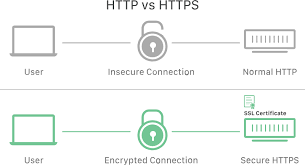

WEB TECHNOLOGY

Table of Contents
Click on the topic to learn more
Client/Server

The client-server model is a fundamental network architecture where
clients request services or resources from servers, which then provide them. This model is widely used in various
applications, from web browsing to email, and forms the basis of many modern computing systems.
A client is a computer or software application that requests resources or services from a server.
Examples include web browsers, email clients, and applications that access data from a central database.
Clients initiate the communication by sending requests to the server. A server is a computer or software that provides resources and services to clients.
Servers can handle various tasks, such as serving web pages, storing data, managing email, or providing access to applications.
Servers listen for client requests and respond accordingly. The client-server model typically uses a request-response pattern for communication.
The client sends a request to the server, and the server processes the request and sends back a response.
This communication can happen over a local network or the internet. Servers manage resources and services, making them easily accessible to clients. A web browser (client) requests a website from a web server, which then sends back the website's content.
Components of web application
A web application is typically composed of three fundamental structural components that interact to deliver functionality to the user:
- Client-Side (Frontend):
This component represents the user interface and the interactive elements that a user directly interacts with in their web browser. It is primarily built using:
HTML (HyperText Markup Language): Provides the basic structure and content of web pages.
CSS (Cascading Style Sheets): Defines the visual styling and layout of the web application.
JavaScript: Adds dynamic behavior, interactivity, and client-side logic.
Frontend Frameworks/Libraries: Tools like React, Angular, or Vue.js streamline development and manage complex user interfaces.
- Server-Side (Backend):
This component handles the core business logic, data processing, and communication with the database. It is responsible for responding to client requests and managing the application's state. It often involves:
Server-Side Programming Languages: Languages like Python, Java, PHP, Node.js, or Ruby are used to write the application's logic.
Backend Frameworks: Frameworks like Django (Python), Spring (Java), or Express.js (Node.js) provide structure and tools for backend development.
APIs (Application Programming Interfaces): Define how the client and server communicate and exchange data.
- Database:
This component serves as the persistent storage for the application's data. It stores information such as user profiles, content, and application settings. Common database types include:
Relational Databases: Such as MySQL, PostgreSQL, or Oracle, which store data in structured tables.
NoSQL Databases: Such as MongoDB or Cassandra, which offer more flexible data models for specific use cases.
Types of Web content
Web content encompasses all the
information and digital media
presented on a website.
This includes text, images, videos, audio, and
interactive elements. It can be broadly categorized into passive and interactive content, with various types like blog posts, product pages, case studies, and user-generated content falling under these categories.
Here's a more detailed breakdown:
- Text:
- Blog posts: Articles providing information, opinions,
or news on a specific topic.
- Marketing copy: Content on homepage, landing pages, and product pages,
designed to attract and inform customers.
- Case studies: In-depth analysis of how a product or
service was used to solve a problem.
- Ebooks and whitepapers: Longer-form content, often downloadable, providing detailed information.
- Help center content: FAQs, guides, and troubleshooting articles.
- Images:
- Photographs: Real-world images used for visual appeal and to showcase products or services.
- Graphics: Illustrations, charts, and other visuals used to convey information or enhance design.
- Vector art: Scalable images used for logos and other design elements.
- Ebooks and whitepapers: Longer-form content, often downloadable, providing detailed information.
- Video:
- Informational videos: Tutorials, explainers, or product demonstrations.
- Promotional videos: Content designed to market a product or service.
- Entertainment videos: Short, engaging videos used for social media and other platforms.
HTTP-HTTPS Request

An HTTPS request is a communication initiated by a client (typically a web browser) to a server using the Hypertext Transfer Protocol Secure (HTTPS). This protocol is the secure version of HTTP, ensuring encrypted and
authenticated communication.HTTPS uses Transport Layer Security (TLS), the successor to Secure Sockets Layer (SSL), to encrypt the data exchanged between the client and the server. This encryption prevents unauthorized parties from intercepting and reading sensitive information, such as
login credentials or financial details.The server presents a digital certificate (SSL/TLS certificate) issued by a trusted Certificate Authority (CA) to the client. This certificate verifies the server's identity, assuring the client that they are connecting to the legitimate
website and not a malicious imposter.HTTPS ensures that the data transmitted remains unaltered during transit. Any tampering or modification of the data would be detected, preventing malicious injection or data corruption.When a client initiates an HTTPS request, a "TLS handshake" occurs. During this handshake, the client and server negotiate encryption parameters and exchange cryptographic keys. Once a secure connection is established, all subsequent data transfer
is encrypted using these keys.
Dynamic Web Pages
A dynamic web page is a web page whose con
tent changes based on various factors, suc
h as user interaction, time of day, data re
trieved from a database, or other variables. Unlike static web pages, which display the same content to all visitors, dynamic pages can persona
lize content, offer interactive features, and provide real-time updates.
Key characteristics of dynamic web pages:

-
Interactivity:
They enable user interaction through forms, search functionalities, comments sections, and other interactive elements.
- Database Integration:
Dynamic pages often retrieve and display data from databases, allowing for efficient management and presentation of large amounts of information.
Application server

An application server is a software framework that hosts applications, providing the infrastructure for dyn
amic web applications to run and deliver business logic. It acts as a middle tier between the operating system and
the application, handling tasks like state management, security, data access, and more. Application servers often work in conjunction with web servers, which handle stati
c content, while the application server focuses on dynamic content and application logic.A user's browser sends a request for a web page.
The web server receives the request and, if it's for dynamic content, forwards it to the application server.
The application server processes the request, potentially interacting with databases or other resources.
The application server sends the results back to the web server. Application servers provide middleware services, which are essential for connecting different parts of a distributed application.
State Management:
They handle user sessions and maintain the state of an application, ensuring a consistent user experience.
The web server sends the final response back to the user's browser. Application servers are designed to serve dynamic content, meaning content that changes based on user input or other factors. This includes things like web pages generated using JSP or servlets. They provide the runtime environment for application code and enable interaction with other components like databases and messaging systems.